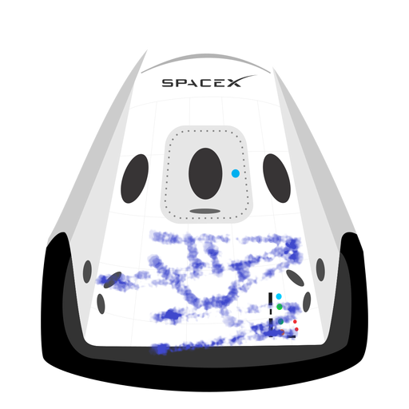

Hyperblog
Tu blog de cabecera
Este es el titulo atractivo e interesante del post
Parrafo de inicio donde explicamos las cosas increibles que se pueden hacer con ramas

Página web, generalmente de carácter personal, con una estructura cronológica que se actualiza regularmente y que se suele dedicar a tratar un tema concreto asi que nada espero que te guste perrito aguante river compiiiiiiiiiii
Suscribite y dale like